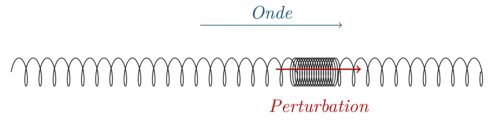
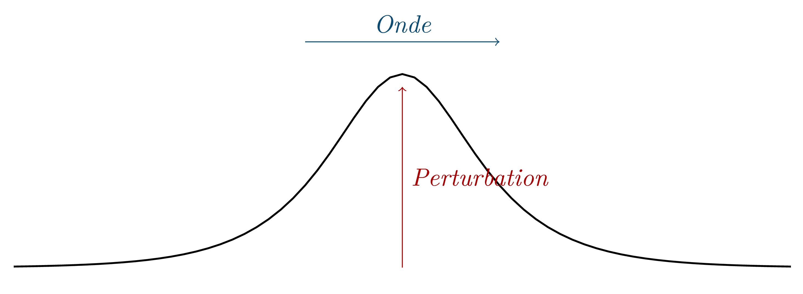
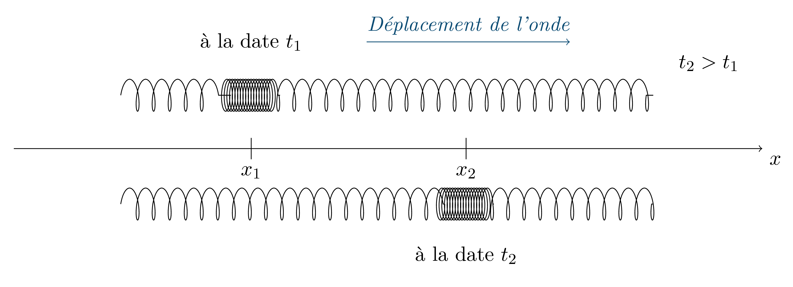
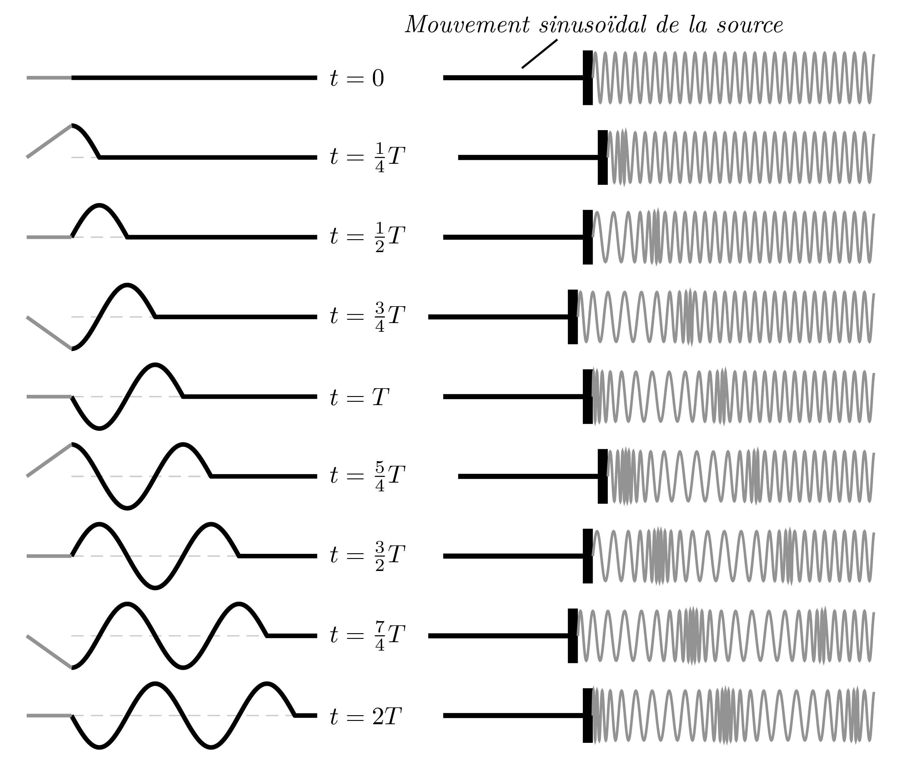

Qu’est ce qu’une onde progressive ?
Étude de quelques simulations de propagation d’ondes mécaniques
Onde progressive de compression
Onde progressive se propageant le long d'une corde
Onde mécanique progressive
Onde progressive longitudinale.
Une onde progressive est dite longitudinale lorsqu’elle se propage selon une direction parallèle à la direction de la déformation. 
Onde progressive transversale.
:Une onde progressive est dite transversale (ou transverse) lorsqu’elle se propage selon une direction perpendiculaire à la direction de la déformation. 
Une onde mécanique se transmet de proche en proche.
Une onde mécanique se propage de « proche en proche », chaque point du milieu reproduit le mouvement de son voisin immédiat avec un léger retard.
Une onde mécanique se propage sans transport de matière.
Chaque point du milieu dans lequel se propage l’onde reprend sa position initiale après le passage de l’onde.
Transport d’énergie.
Une onde transporte l’énergie fournie par la source de proche en proche.
Atténuation d’une onde.
Dans le cas d’une onde à la surface de l’eau, l’énergie fournie par la source se répartit sur des rides circulaires de rayon croissant. La hauteur des ondulations diminue progressivement.
Cette atténuation de l’amplitude de la perturbation existe, dans les milieux à deux ou trois dimensions, alors que l’énergie transportée par la perturbation peut rester constante.
Remarques.
- Seules les ondes progressives longitudinales se propagent dans les fluides.
- Les solides transmettent les ondes progressives longitudinales et transversales.
- Les ondes mécaniques nécessitent la présence d’un milieu et ne peuvent donc pas se propager dans le vide.
Célérité d’une onde
Pour bien souligner que les caractéristiques d’une onde ne sont pas celles d’un objet matériel, on appelle célérité la vitesse de déplacement de la déformation d’un milieu. C’est aussi la vitesse de déplacement de l’énergie.
De quoi dépend la célérité d’une onde ?
- La célérité d’une onde qui se propage dans un milieu non dispersif est caractéristique de ce milieu.
- La célérité d’une onde progressive ne dépend pas (sauf cas particulier) de la valeur de l’élongation (importance de la déformation) de cette onde.
Remarques :
-
Plus le milieu est rigide, plus la célérité est grande.
- Sur une corde, la célérité d’une onde est d’autant plus grande que la corde est tendue.
- La célérité du son est plus grande dans un solide que dans l’eau et elle est plus grande dans l’eau que dans l’air.
-
Plus l’inertie du milieu est grande, plus la célérité diminue.
- Sur une corde, la célérité est d’autant plus grande que la masse linéique est faible.
- Sur une échelle de perroquet, la célérité est d’autant plus petite que la longueur des barreaux est grande.
Notion de retard
Retard d’une onde
Dans un milieu non absorbant et non dispersif, chaque point de l’espace atteint par une onde progressive reproduit exactement le mouvement de la source un peu plus tard dans le temps.
On appelle retard la durée nécessaire à la propagation de l’onde entre deux points étudiés.
Expression du retard
 - Le retard avec lequel l'onde atteint le point d'abscisse $x_2$ est, si on note $v$ la célérité de l'onde : $$ \tau = \dfrac{x_2 - x_1}{v}$$ - La la date $t_2$ à laquelle l'onde atteint cette abscisse est alors : $$ t_2 = t_1 + \tau$$Qu’est-ce qu’une onde progressive périodique ?
Phénomène périodique
Remarque :
Un phénomène périodique n’a ni début ni fin ; c’est un modèle.
La fréquence $f$ est donc aussi égale au nombre de périodes $T$ du phénomène périodique durant une seconde : $$f = \dfrac{1}{T}$$ avec $f$ en hertz (Hz) et $T$ en seconde (s).
Remarque :
$$\pu{1 Hz} = \pu{1 s-1}$$
Périodicité temporelle d’une onde progressive périodique
La période (temporelle) de chaque point du milieu est identique à celle de la source (propriété de linéarité du milieu).
La période temporelle d’une onde progressive est identique à celle de la source qui lui donne naissance.
Comment déterminer la période temporelle d’une onde ?
Rester immobile, ce qui revient à fixer les coordonnées d’espace, et laisser s’écouler le temps.
Périodicité spatiale d’une onde progressive périodique
Déphasage entre le mouvement de deux points distincts.
Deux points matériels situés à des distances différentes de la source, atteints par une onde progressive, le sont avec des retards différents. Les mouvements dans le temps de ces deux points sont déphasés — les valeurs des élongations de l’onde en chacun des points sont différentes.
Période spatiale.
Lorsqu’on prend une photo instantanée du milieu, l’image obtenue présente un motif (spatial) qui se répète, identique à lui-même. Le milieu dans lequel l’onde se propage présente une périodicité spatiale.
Remarques :
- C’est le déphasage entre tous les points que l’onde périodique atteint qui est à l’origine de la périodicité spatiale.
- La périodicité spatiale d’une onde périodique non sinusoïdale (cf. section suivante) ne porte aucun nom.
Comment déterminer la période spatiale d’une onde ?
Prendre une photo instantanée du milieu, ce qui revient à fixer les coordonnées de temps, et explorer l’espace.
Qu’est-ce qu’une onde progressive sinusoïdale ?
Onde progressive sinusoïdale
Puisque chaque point matériel atteint par l’onde reproduit le mouvement de la source avec un certain retard, si cette dernière possède un mouvement sinusoïdal dans le temps, ces points possèdent le même mouvement sinusoïdal, déphasé dans le temps.
La période (temporelle) des mouvements de ces points est identique à celle de la source.
Longueur d’onde
Relation entre la longueur d’onde et la période temporelle
 > Allures d'une corde et d'une tranche d'air (ou d'un ressort) à différentes dates. La signification de la longueur d'onde apparaît clairement : **c'est la distance parcourue par l'onde pendant la durée $T$ à la vitesse $v$.**Donc $$\lambda = v\, T$$